The HAProxy stats page is a wall of tables
Dozens of columns, one row per server. No sense of which URL goes where, no history, no charts. You read numbers instead of seeing the problem.
See your HAProxy and NGINX the way you think about them: as a map. Live health, charts with history and a config audit in one portal, with a single docker compose file.
curl -fsSLO https://raw.githubusercontent.com/cloudlative/gatelight/main/docker-compose.yml
&& docker compose up -d
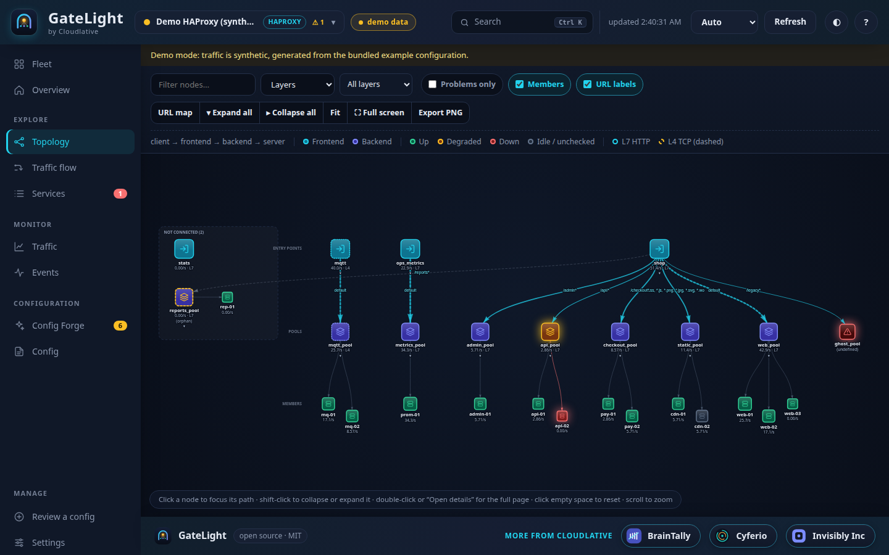
Reads what you already run
We run HAProxy and NGINX in front of real systems. Every time something broke, we ended up decoding a table or reading config files by hand.
Dozens of columns, one row per server. No sense of which URL goes where, no history, no charts. You read numbers instead of seeing the problem.
Open-source NGINX gives you stub_status: four numbers for the whole instance. No per-upstream health, no per-server traffic. The dashboard is a paid feature.
Which frontend routes /api to which pool? Is the config on disk what is actually running? You only find out when a reload goes wrong.
Which URL goes to which backend, which servers sit behind it, what is healthy right now, and what changed. Point it at a running server, or drop a config file and get the map with no server at all.
Frontends → routing rules → pools → servers. Four layouts: Layers, Flow, Mind map and a foldable Tree. Click to focus a path.
Networks → hosts → services behind the load balancer, with aliveness for every one and an "only what is down" filter.
Grafana-style: zoom, pan, shared crosshair, 5 minutes to 7 days, kept in SQLite across restarts. Donut charts for HTTP errors.
Undefined backends, orphaned pools, missing health checks, weak credentials, exposed stats, config drift. Every finding has a line and a fix.
Config Forge checks a config against the official docs of the exact release you run: HAProxy 1.7 to 3.4 and NGINX. See what is unknown, too new, removed or deprecated there, with a fix and version-aware recommendations.
Domain to listener to server: which backend address and port each domain reaches, where TLS ends, and the exact path your backend receives after rewrites. Every relationship is marked active, idle, down or never used, and you can filter to what is alive, not alive or unused. Try any URL against the config.
Every frontend and pool is labelled HTTP (L7) or TCP (L4), with a layer filter and tooltips on what each layer can and cannot see.
Upload one or more HAProxy logs (plain or gzipped, size-limited, shown combined) and see requests, response times, errors, status codes, servers, URLs and clients, with filters. Only aggregates are kept. Instructions for splitting big logs are built in.
Paste a HAProxy or NGINX config and get a score, every issue explained, and a rewritten version for your exact release. Each change can be switched off, and nothing touches your servers.
Point GateLight at where your config is served and pull the current version with one click, with a summary of what changed. Read-only.
HAProxy via CSV or the Runtime API. NGINX via stub_status, the Plus API and an active TCP probe, so even open-source NGINX gets per-server health.
Drop a haproxy.cfg, an nginx.conf or a whole folder. Nothing is saved. Keep several as named instances and update them when files change.
Slack, Mattermost and Teams-compatible webhooks on down and recovery. Prometheus /metrics out of the box.
Read-only toward your servers (enforced in code and tests), sign-in, secret redaction, strict CSP. Runs non-root with a read-only filesystem and no CDN calls.
gatelight audit haproxy.cfg --fail-on error with GitHub annotation output. Block risky configs before they ship.
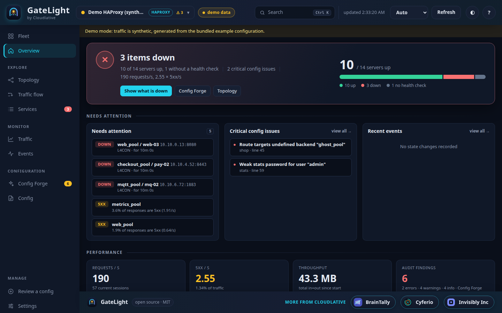
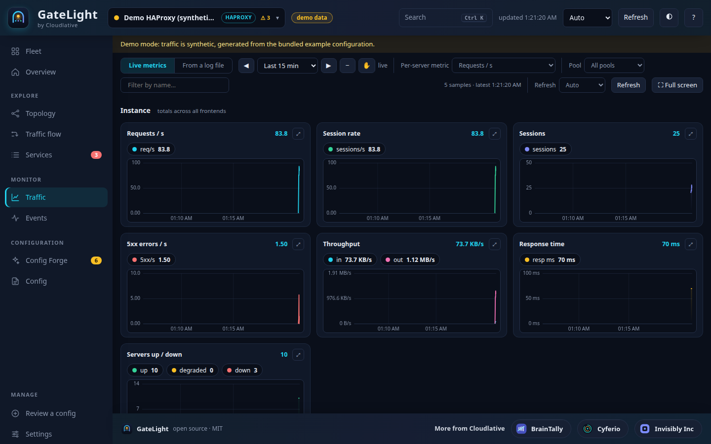
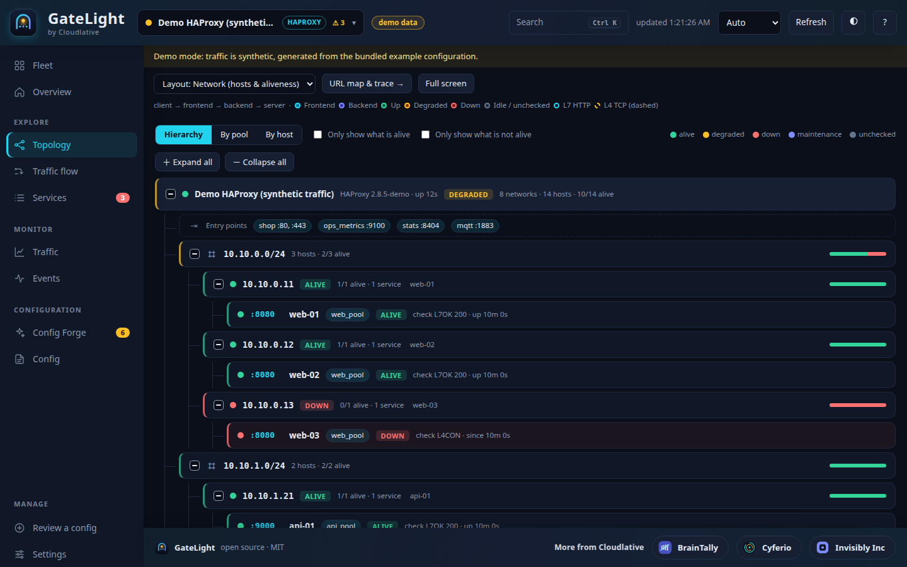
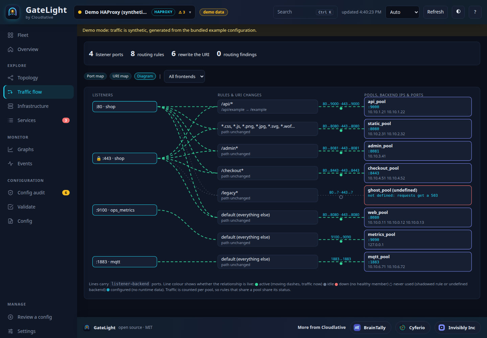
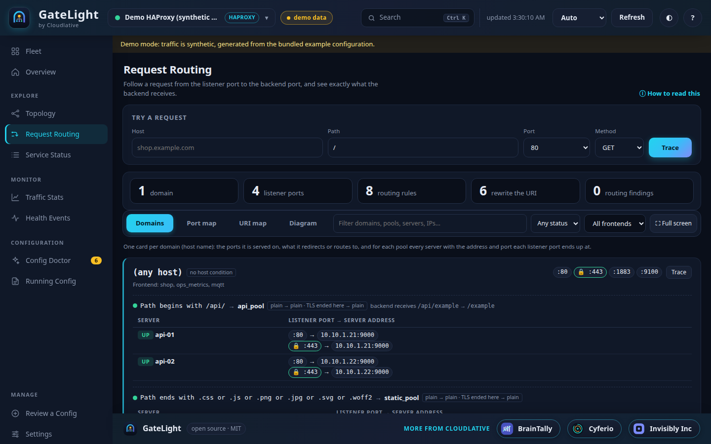
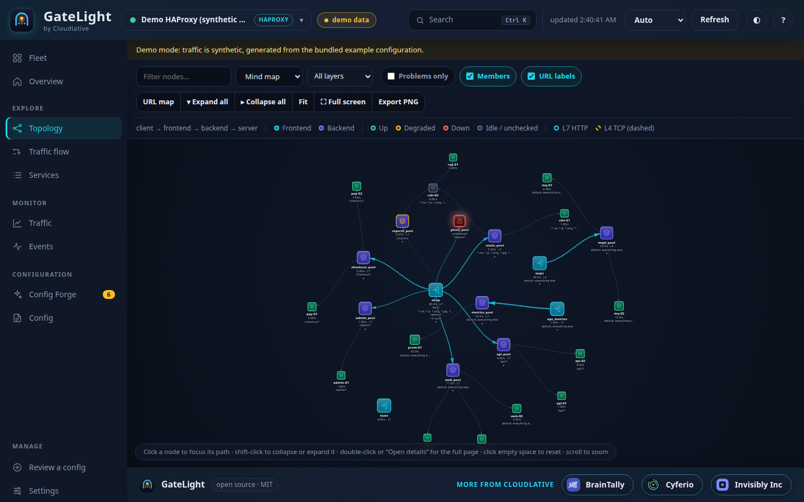
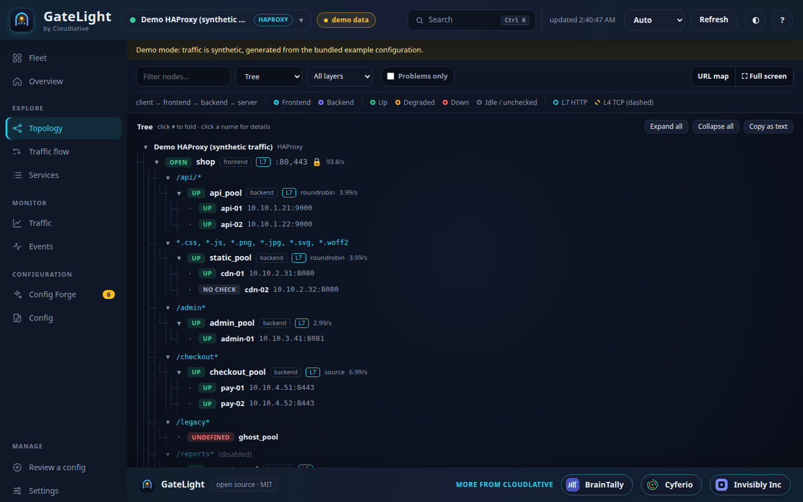
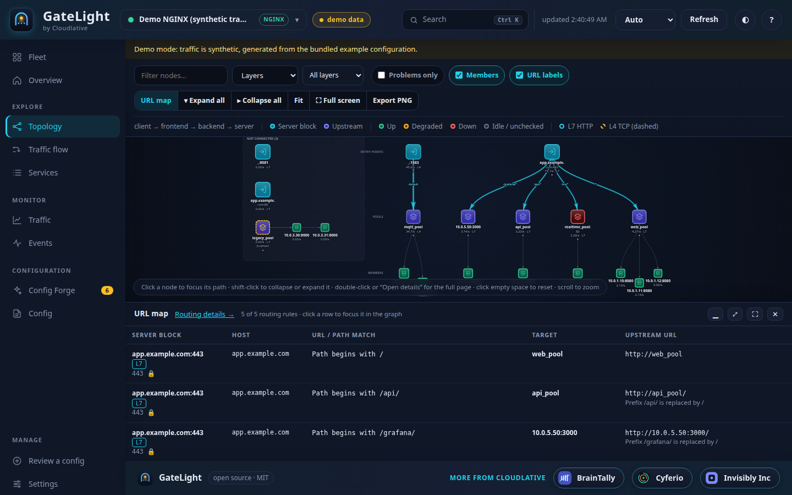
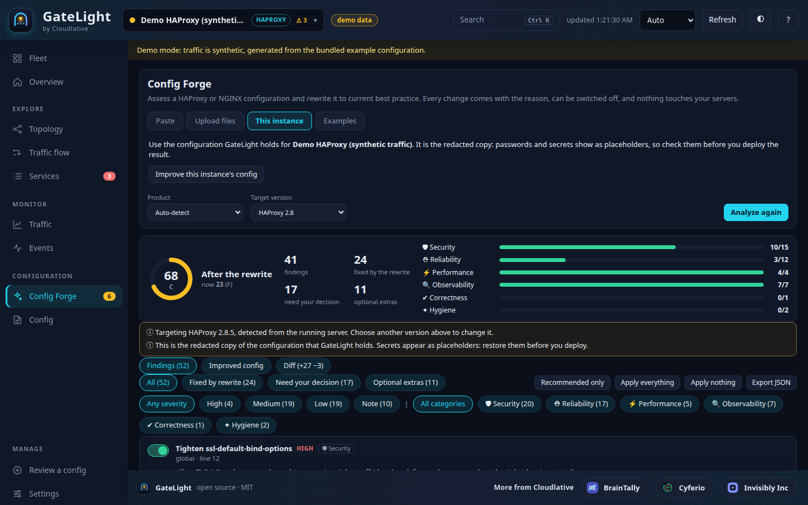
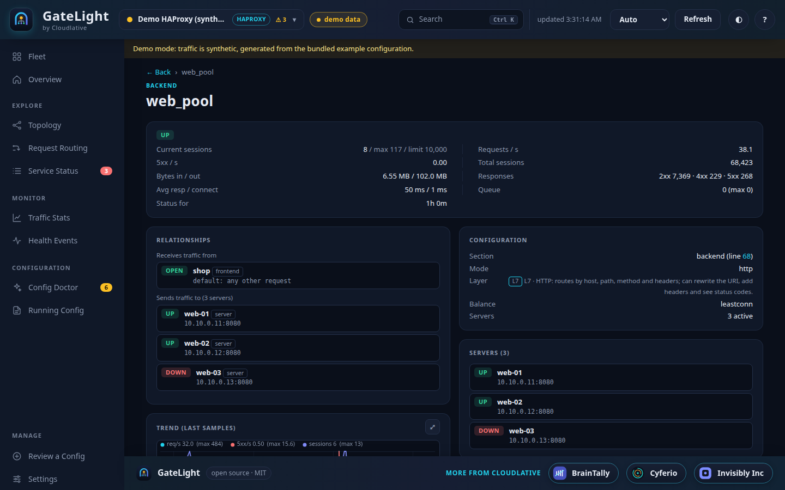
Clickable, explained health cards, a traffic chart and what needs attention. Everything links to the detail behind it.
| Stats page / stub_status | GateLight | |
|---|---|---|
| Relationships | None | Frontend → rule → pool → server map, four layouts |
| URLs and paths | Not shown | Every host/path → target, searchable |
| Health | Tables of status text | Colour-coded, with reason and time in state |
| History | None | Zoom and pan, 5 min to 7 days, kept in SQLite |
| NGINX upstream health | None (open source) | Per server via Plus API or TCP probe |
| Config problems | None | 39 audit rules with line numbers and fixes |
| Changes | None | Event timeline and webhook alerts |
| Setup | Built in | docker compose up -d |
You need Docker with the Compose plugin. No clone, no build, and upgrades are one command.
curl -fsSLO https://raw.githubusercontent.com/cloudlative/gatelight/main/docker-compose.yml
docker compose up -d
The first start generates a password and prints it once. The user is admin.
docker compose logs gatelight | grep "FIRST RUN"
Overview → Add an instance. Pick HAProxy or NGINX, enter the stats URL, press Test connection, then Save & connect. On the same machine as Docker, use http://host.docker.internal:PORT/stats.
Just curious? DEMO_MODE=true docker compose up -d serves synthetic traffic on a sample shop. Only want the map of a file? Use Review a config and nothing is saved.
One command pulls the newer image and replaces the container. Your connections, chart history, events and sign-in live in a Docker volume that is never touched, so nothing needs re-entering. Pin a release with GATELIGHT_VERSION and roll back the same way.
docker compose pull && docker compose up -d
Kept in the gatelight-data volume: saved connections, chart history (14 days), events and the session secret. Only docker compose down -v deletes it. Backup and restore ↗
stats auth are redacted in every API response.includes are sandboxed.No. For HAProxy it reads the stats page (CSV) or the Runtime API. For NGINX it reads stub_status, the Plus API, and can probe your upstreams over TCP. Use a read-only stats user.
Yes. Drop a haproxy.cfg, an nginx.conf or a whole folder (with conf.d/ includes) into Review a config. You get the map, the URL table and the audit. Nothing is saved unless you choose to keep it as a named instance.
In a Docker volume: saved connections (private to the browser that added them), chart history and events in SQLite. Credentials are stored with file mode 0600 and never sent back to the browser.
GateLight can TCP-probe every upstream server from its own host. That shows reachability from GateLight's point of view. With NGINX Plus, it reads real per-peer health and traffic from the API.
Nothing. GateLight is MIT licensed, and the image is free to pull.
Two minutes, one compose file, a much better view of what sits behind your load balancer.